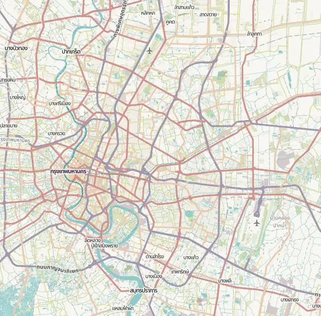
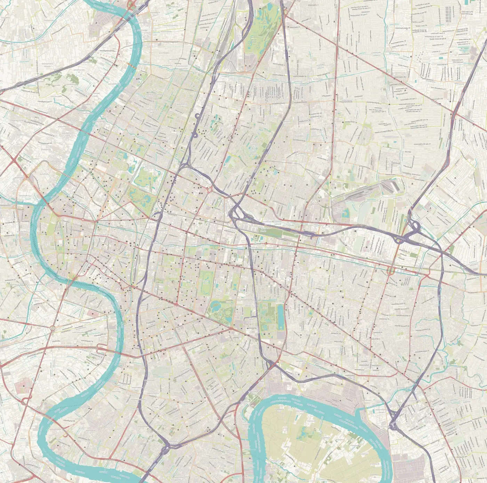

방콕 동네 지도
지도
KOR
ENG
어디서 놀까, 방콕
Clubs ⇄ Cafés ⇄ Local brands, wired through Bangkok
지도에서 핀을 누르면 사진과 설명이 뜬다. 큰 숫자는 동네, 마름모는 하우스·테크노 베뉴, ✦는 요즘 뜨는 곳이다.
AIRPORTS
⇄
CITY

✈
BKK
✈
DMK
공항 2곳
민트 네모가 아래 큰 지도 범위다. 이름을 누르면 시내 들어오는 법이 뜬다.
수완나품 BKK
동쪽 30km · 공항철도 26분
돈므앙 DMK
북쪽 25km · 다크레드라인 · A1 버스
15
동네
9
하우스·테크노 베뉴
16
요즘 뜨는 곳
2
공항
Filter
전체
클럽
쇼핑
카페·힙
올드타운·기타
Layers
베뉴 핀
핫플 핀
숍 핀
공간 핀

1
시암 스퀘어 · 시암 센터
2
통로
3
에까마이
4
아리
5
송왓 · 탈랏노이
6
야오와랏 · 소이 나나
7
짜런끄룽 · 방락
8
실롬 · 사톤
9
프롬퐁 · 아속
10
프라카농 · 온눗
11
프라나콘 · 방람푸
12
짜뚜짝
13
랏차테위 · 쁘라뚜남
14
RCA · 라마 9
15
삼얀 · 반탓통
M
Mustache Bangkok
S
Subwerk
E
Elsewhere · Trinity Complex
D
DUAL · Trinity Complex
T
Bar Temp.
12
12x12
SS
Sing Sing Theater
C
Clutch
CC
Culture Cafe
✦
두싯 센트럴 파크 · 루프 파크
✦
원 방콕
✦
룸피니 공원 호커 센터
✦
클라우드 11
✦
Sala Saneha
✦
Bo.bkk
✦
Roast8ry BKK
✦
Sydny Bagels Charoenkrung
✦
Norman's Collective
✦
Khaoya Archive
✦
Findfoundfounded
✦
Hand and Hearts Coffee Roaster
✦
Pinki's Deli
✦
Brown Matcha House
✦
Dry Wave · Bar Us
✦
Sato San
1
TRES.
2
Garçon Dept · Frank Garçon
3
LOFT EYES
4
FRANK. Song Wat
5
Daddy and the Muscle Academy
6
HIDE.Selected
7
SOS Sense of Style
8
Absolute Siam Store
9
TOKYO JOE BKK
10
ORBIT Vintage & Selected
11
Red Building Vintage
12
blocstore
13
Vintage by Tida
14
(un)FASHION Vintage
15
The Warehouse Bangkok
16
Made By Legacy
17
Chatuchak Weekend Market
1
theCOMMONS Saladaeng
2
GUMP's Ari Community Space
4
White Cloud Ari
6
The Commons Thonglor
7
SEENSPACE Thong Lo
8
GalileOasis
9
The Corner House Bangkok
10
TCDC Bangkok
11
BACC
+
−
⟲
⌘/Ctrl + 스크롤 · 두 손가락으로 확대 · 끌어서 이동
동네
하우스·테크노 베뉴
✦ 핫플
숍
복합문화공간
핀은 대략 위치 · 지도 ©
OpenStreetMap
contributors (HOT)
01
출처
Mixmag Asia: BEAM 폐업 공지 (2025-10)
Mustache Bangkok 공식 사이트 (일정·주소)
Bangkok Nights: 테크노 클럽 12곳 (2026)
Resident Advisor: Bar Temp. 오픈 뉴스
DJ Mag: Bar Temp.
Deep House Thailand 필드 가이드 (2026)
Time Out: 시암 스퀘어 가이드
Time Out: 에까마이 숍
Inside Retail: 시암 센터 신규 입점 (2026-09)
CK Travels: 송왓 카페 (2026)
CK Travels: 탈랏노이 카페 (2026)
Time Out: 방콕 신규 카페 20 (2026)
Time Out: 방콕 신규 바 7 (2026)
BK Magazine: Asia's 50 Best Bars 2026 방콕
The Story Thailand: Cloud 11 개장 (2026-07)
Time Out: DUAL (Trinity Complex)